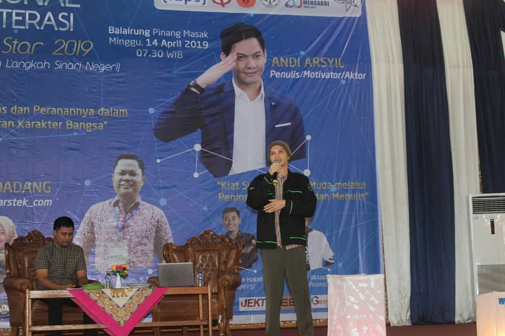

I build AI curriculum at Orbit Future Academy, ship computer-vision and LLM demos in my spare time, and still get excited every time a servo moves because of code I wrote.

Technology can fix almost anything. Humans still have to fix themselves.
I graduated from Sriwijaya University with an Electrical Engineering degree and spent most of my career since then teaching machines to see, listen, and make decisions. For the last three years I've led content and curriculum work in AI at Orbit Future Academy, covering computer vision, NLP, LLMs, reinforcement learning, and the messy bits where those topics meet real hardware.
Before AI I was the lab assistant wiring Atmega, MCS, and Arduino boards for undergrad microcontroller classes. That hardware instinct never left. I still prototype on Raspberry Pi and ESP32, still prefer to test ideas on cheap components before touching a GPU, and still think a good solution should fit on one A4 page before it deserves a cluster.
On the side I take freelance robotics work, write C for automation jobs, design PCBs in Eagle, and build object-detection pipelines with YOLO for things like hotspot detection on solar panels. A handful of those projects live on my Hugging Face Space as runnable demos, and I write about the ideas behind them on Medium.
Outside work I read too many papers, fish when the weather allows, and still repair the occasional broken TV for relatives who refuse to throw things away.
Eight years of teaching, mentoring, building robots, and — more recently — designing AI programs for universities and industry partners.
Most client work stays private, but the runnable demos and personal experiments live on my GitHub and Hugging Face Space.
My entry point into engineering was a line-follower robot in 2014. Three years later it turned into an international podium at Trinity College.
Second Runner Up at the international level. The robot had to map a labyrinth, find a candle, and put it out. Hartford, Connecticut.
A selection of events where I've been asked to share what I know — mostly at Indonesian universities, plus one international conference.
Modules I currently run or have run in the past — mostly for Kampus Merdeka cohorts, bootcamps, and private training groups.
Paste new certificates into the JSON block at the bottom of this file — no CSS required.
I'm always up for a conversation about AI education, computer vision in production, or the next small robot that shouldn't exist but somehow does.